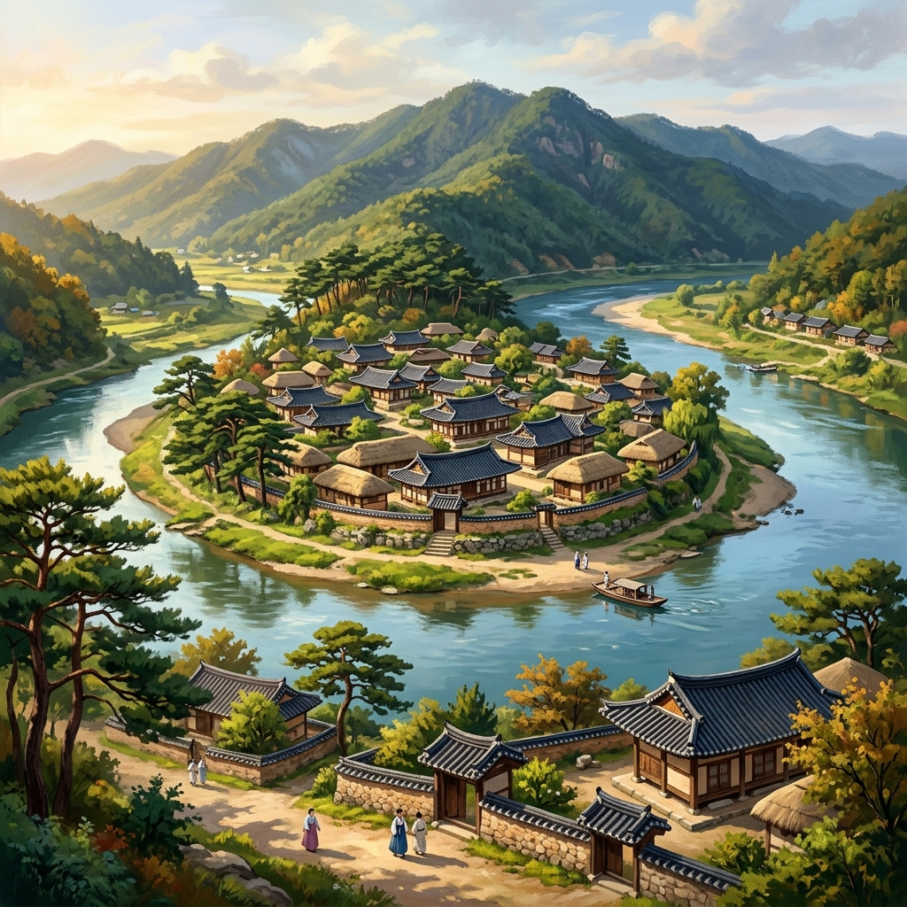

Andong is South Korea's cultural capital, preserving 800 years of Confucian philosophy, historic Hanok villages, ancient wooden temples, and flavorful culinary legends like Andong Jjimdak.
안동은 유교 철학, 유서 깊은 한옥 마을, 유서 깊은 목조 사찰, 그리고 대표적인 향토 음식인 안동찜닭을 통해 800년의 역사를 간직한 한국 정신문화의 수도입니다.
Explore a selection of historic, educational, and scenic attractions that showcase Andong's unique heritage.
안동 고유의 전통문화와 수려한 경관을 간직한 역사 및 학문 명소들을 살펴보세요.

UNESCO World Heritage 유네스코 세계유산A living museum where descendants of the Ryu clan have lived for over 600 years. Nestled by the S-shaped Nakdong River, this village preserves traditional thatched and tiled roof houses, ancient folk traditions, and the Hahoe Mask Dance.
풍산 류씨 가문이 600년 넘게 대를 이어 살아가고 있는 살아있는 민속 박물관입니다. S자 모양으로 굽이치는 낙동강에 둘러싸인 이 마을은 고가옥(와가와 초가), 유서 깊은 민속 신앙, 그리고 하회별신굿탈놀이를 고스란히 보존하고 있습니다.
Korea's longest wooden footbridge, spanning the Nakdong River. It honors a tragic, beautiful 16th-century love story. Toggle the sun/moon icon on the image to see Woryeonggyo light up under the night sky!
낙동강을 가로지르는 한국에서 가장 긴 나무 인도교입니다. 16세기 조선시대 원이 엄마의 숭고하고 애절한 부부 사랑 이야기를 담고 있습니다. 카드 우측의 달 아이콘을 클릭하여 화려하게 불이 켜진 월영교의 야경을 감상해보세요!
Established in 1574 in honor of Yi Hwang, Korea's most famous Confucian scholar. The academy is positioned in a serene mountain valley, containing ancient lecture halls, libraries, and scenic paths overlooking Andong Lake.
퇴계 이황 선생의 학문적 업적과 덕행을 기리기 위해 1574년에 건립된 서원입니다. 고요한 산자락에 아늑하게 안긴 이곳은 고서들이 가득한 광명실, 강당(전교당)과 더불어 안동호가 한눈에 내려다보이는 아름다운 산책로를 지니고 있습니다.
Celebrated for its beautiful integration with nature. Its main wooden pavilion, Mandaeru, features an open architectural design that perfectly frames the white sandy river banks and sheer cliff mountains opposite.
자연 경관과의 탁월한 조화로 한국 서원 건축의 백미라 꼽힙니다. 대표 누각인 만대루는 기둥 사이로 가로막는 벽이 없어, 흐르는 낙동강과 병산의 울창한 수평 절벽을 마치 병풍 속 그림처럼 온전히 느낄 수 있습니다.
Located on the slopes of Mt. Cheondeungsan, this temple is home to Geungnakjeon, the oldest surviving wooden building in Korea (dating to the 1200s). Known for its quiet, spiritual, and untouched mountain atmosphere.
천등산 기슭에 자리 잡은 이 절은 13세기 초(고려시대)에 축조된 한국의 가장 오래된 목조 건물인 극락전을 품고 있습니다. 때 묻지 않은 고즈넉한 산세 속에서 참선과 치유의 불교 철학을 경험할 수 있습니다.
Andong is not just a destination for sightseeing; it is an experience of living customs, rich recipes preserved for centuries, and ancient folk theater.
안동은 단순한 구경거리가 아닌, 수백 년 동안 계승되어 온 생활 관습과 지혜, 풍미 깊은 요리 비법, 그리고 신명 나는 민속극이 살아 숨 쉬는 체험형 도시입니다.
This dramatic performance dates back to the Goryeo Dynasty. Using beautifully carved smiling wooden masks, the dance satirized corrupt aristocrats and monks, providing comic relief for common villagers. Shows are held regularly at Hahoe Village.
고려시대부터 계승된 서민 주도의 가면극입니다. 익살스러운 표정의 하회탈을 쓰고 지배 계급인 양반과 선비의 허세, 부패한 수도자의 위선을 풍자하며 지친 민중들의 스트레스를 해소하고 화합을 꾀했습니다. 주말마다 상설 공연이 진행됩니다.
Maskdance Festival Website → 안동국제탈춤페스티벌 웹사이트 →Andong's food is famous nationwide:
한국 전국에서 손꼽히는 독창적인 식문화를 지니고 있습니다:
Braised chicken with soy sauce, garlic, glass noodles, potatoes, and red chili peppers. Sweet, savory, and spicy!
간장을 베이스로 하여 마늘, 당면, 감자, 그리고 매콤한 건고추를 푸짐하게 볶아낸 닭조림입니다. 달콤 짭조름하면서도 매콤한 끝 맛이 일품입니다.
Traditionally salted to preserve the fish as it was carried from the eastern sea to inland Andong, giving it a rich, savory taste.
동해안 영덕에서 내륙 지방인 안동까지 고등어를 실어 나를 때 상하는 것을 방지하기 위해 천일염으로 염장 처리를 한 것에서 비롯된 전통 염장어입니다.
Experience "Ondol" (traditional Korean floor heating) and wake up to the quiet chirping of forest birds. Many heritage homes in Hahoe Folk Village offer private rooms with paper screens and organic local breakfasts prepared by host families.
전통 구들장을 사용하는 따뜻한 온돌방을 체험하고 상쾌한 대숲 바람과 새소리에 아침을 맞이해보세요. 하회마을 내 고택들은 전통 한지 창호 문창살이 돋보이는 객실과 건강한 시골 밥상을 대접합니다.
Tip: Book early on platforms like Airbnb or the Andong Tourism portal, as rooms are limited! 팁: 방수가 제한적이므로 네이버 예약, 에어비앤비 또는 고택포털을 통해 일찍 예약하시는 것을 권장합니다!Korea's national treasure, famed for its distinct movable jaw that expresses laughter or anger depending on the angle.
움직이는 턱 구조 덕분에 보는 각도와 배우의 몸짓에 따라 때로는 파안대소로, 때로는 분노의 표정으로 입체적 변화를 보여주는 국보 문화재입니다.
Choose your favorite spots on the left to dynamically generate a 1-day travel timeline with calculated transit and visiting times.
가고 싶은 목적지를 왼편 단추에서 선택하면 최적화된 동선과 차량 이동 시간, 그리고 하루 일정표 일람을 실시간으로 도출합니다.
Click any card to play standard spoken audio pronunciation. Useful phrases for transit, restaurants, and directions in Andong.
카드를 클릭하면 실제 발음을 읽어줍니다. 안동 버스 정류장, 식당, 길 찾기 등에서 즉각 활용할 수 있는 회화 모음입니다.
Practical guidelines on taking trains, buses, and local transport from South Korea's main hubs.
주요 거점에서 안동으로 가는 방법 및 시내버스 이용 노하우를 정리했습니다.
Take the KTX-Eum high-speed train. Travel time is around 2 hours. Tickets cost approximately ₩25,000.
청량리역에서 KTX-이음을 타고 2시간 만에 신안동역에 도착합니다. 편도 운임은 약 25,000원입니다.
The new station is located outside the downtown core. Taxi ranks and public bus bays are directly in front of the exit doors.
안동역은 시 외곽에 신설되었습니다. 역사 문을 나서면 우측에 시내버스 정류장, 정면에 택시 승차장이 바로 펼쳐집니다.
Runs hourly from Andong Station to Hahoe Village. Takes around 40 minutes. You can pay with a standard T-Money transit card.
안동역에서 매시간 정각 근방에 하회마을로 출발합니다. 소요시간 약 40분이며 후불제 교통카드 및 선불 교통카드 모두 사용 가능합니다.
Connects the central bus station / train station to the Woryeonggyo wooden bridge area. Takes 25 minutes.
안동 버스터미널 및 안동역에서 월영교 유원지로 들어가는 주 노선입니다. 약 25분이 소요됩니다.
Google Maps is not updated with detailed walking routes or precise bus arrival times in Korea. Use Naver Map (available in English).
한국에서는 구글 지도의 정밀 도보 길 찾기 및 실시간 버스 정보가 다소 제한적입니다. 네이버 지도(영문 지원)를 사용하시는 것이 훨씬 정확합니다.
Taxis are affordable. Show the driver the destination in Korean characters (e.g., "하회마을" or "월영교") if they do not speak English.
택시는 가장 효율적이고 경제적인 단거리 이동 수단입니다. 목적지의 한국어 명칭(예: "하회마을", "월영교")을 화면이나 캡처로 드라이버에게 보여주면 편리합니다.
We've pinpointed all these locations on our regional travel database. Tap below to navigate directly on Andong's tourist system mapping.
안동의 전 명소를 포함하는 실시간 여행 지도 베이스를 마련해두었습니다. 아래 단추를 클릭해 실시간 네이버 지도 경로로 넘어가 보세요.
Open Naver Maps네이버 지도 열기